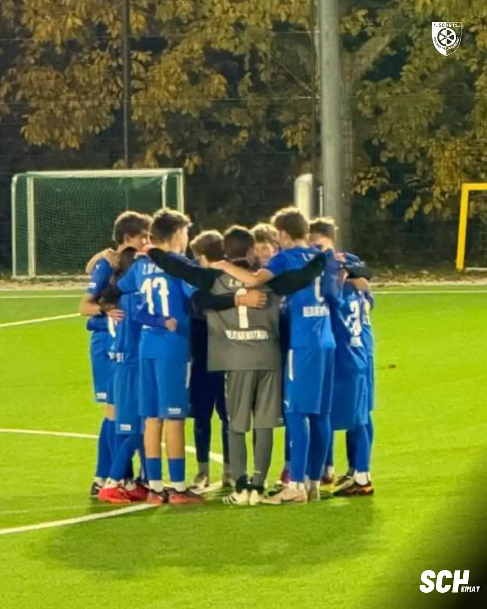

U15 bieten dem Tabellenführer unter Flutlicht die Stirn Stark trotz 1:3!
Freitagabend, 18 Uhr, Flutlicht. Für Fußballer gibt es kaum einen schöneren Rahmen. Die C-Junioren des SCH waren in der Verbandsliga beim Nachwuchsleistungszentrum des FC Rot-Weiß Erfurt zu Gast und unterlagen der U15 der Thüringer Hauptstädter mit 1:3 (1:3). Das Ergebnis sagt aber nur einen Teil. Die Eschborn-Elf zeigte auf dem Kunstrasen an der Cyriaksgebreite eine aufopferungsvolle und kämpferische Leistung, die sich sehen lassen konnte.
Ein Gegner mit Ausrufezeichen
Wie hoch die Hürde lag, zeigt ein Blick auf die Tabelle. Erfurt führt die Liga mit der Maximalausbeute an und hat in der laufenden Saison erst zwei Gegentreffer zugelassen. Einer davon geht nun auf das Konto der Blau-Weißen. Trainer Alexander Eschborn wusste, dass seine Jungs an diesem Abend vor allem Leidenschaft und Ordnung brauchen würden. Beides brachten sie mit.
Kossakowski antwortet postwendend
Die erste Halbzeit verlief aus Sicht der Gäste unglücklich. In der 18. Minute brachte Mattheo Schinköthe die Gastgeber in Führung. Die Blau-Weißen ließ die Köpfe aber nicht hängen. Nur vier Minuten später glich Kapitän Maksymilian Kossakowski zum 1:1 aus (22.) und zeigte damit, dass an diesem Abend etwas möglich war.
Acht Minuten, die das Spiel drehen
Danach schlug Erfurt doppelt zu. In der 26. Minute zog Schinköthe erneut ab, gegen diesen Schuss war nichts auszurichten: 2:1. Vier Minuten später zeigte der Unparteiische auf den Punkt. Julius Knospe verwandelte zum 3:1 (30.). Aus Sicht der Blau-Weißen war das eine äußerst harte Entscheidung, die das Spiel bis zur Pause in die falsche Richtung kippen ließ.
Eine zweite Halbzeit zum Mitnehmen
Was nach dem Seitenwechsel folgte, war vielleicht der stärkste Teil dieses Abends. Die Mannschaft präsentierte sich taktisch sehr diszipliniert und machte es dem Nachwuchsleistungszentrum die komplette zweite Halbzeit über schwer. Erfurt fand kaum noch Lücken, und so blieb die Partie nach der Pause ohne weiteren Treffer. Für eine Mannschaft, die gegen den bislang dominierenden Spitzenreiter antrat, ist das eine Leistung mit Wert. Ganz aufs Verteidigen beschränkte sich die Eschborn-Elf dabei nicht. Über die gesamte Spielzeit sorgte sie mit gefährlichen Angriffen immer wieder für Entlastung und Torgefahr. Ein zweiter eigener Treffer hätte die Schlussphase womöglich noch einmal richtig spannend gemacht. Am Ende blieb dem Einsatz die Belohnung leider verwehrt.
Mut machen für die kommenden Wochen
Punkte gab es in Erfurt keine. Mitnehmen können die Jungs trotzdem eine Menge: Sie waren gegen das beste Team der Liga lange auf Augenhöhe, haben sich nach Rückschlägen nicht aufgegeben und eine Halbzeit lang konzentriert und geschlossen verteidigt. Mit 15 Punkten bleiben die Blau-Weißen auf Rang fünf im Verbandsliga-Feld und haben den Anschluss weiter im Blick. Ein besonderer Dank gilt den mitgereisten Eltern, die ihre Mannschaft unter Flutlicht lautstark unterstützt haben.
Nach Jena geht die Reise
Am Sonntag, ist unsere U15 erneut auswärts im Einsatz. Um 10:30 Uhr gastiert die Eschborn-Elf beim SV SCHOTT Jena.
Spieldaten
FC Rot-Weiß Erfurt U15 – 1. SC 1911 Heiligenstadt 3:1 (3:1)
FC Rot-Weiß Erfurt U15
Schumann – Knaak (46. Helzig) – Wiegleb (18. Lauterbach) – Schinköthe (46. Steinhoff) – Kirsten (36. Gaderi) – Oliinyk (36. Renke) – Knospe – Host – Rasch (46. Ritzmann) – Bonewitz – Schaubs
1. SC 1911 Heiligenstadt
Erbendruth (36. Struthmann) – Bierwisch – Hildebrandt – Kossakowski – Merker (23. Nolte) – Ludemann – Preis – Watterott – Osburg (65. Griethe) – Strecker – Nicola
Schiedsrichter
Eyüp Celik
Tore
1:0 Schinköthe (18.), 1:1 Kossakowski (22.), 2:1 Schinköthe (26.), 3:1 Knospe (30. FE)
